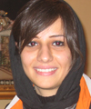

پذيرش > تریبون > مقالات > کمپین : تجربه ای منحصر به فرد اما غیر انحصاری


 کمپین : تجربه ای منحصر به فرد اما غیر انحصاری کمپین : تجربه ای منحصر به فرد اما غیر انحصاری
17 بهمن 1386 - هدي امينيان - نسخه قابل چاپ
کمپین یک میلیون امضا از دو دیدگاه با دیگر جنبش ها و فعالیت هایی که تا قبل از آن در حوزه زنان انجام گرفته، متمایز است:
1. ورود تعداد بسیار زیادی از داوطلبان غالبا جوان برای فعالیت در این حرکت اجتماعی. چرا که در گذشته مسائل و مشکلات زنان در سطح NGO های خاص زنان یا در محافل کوچک زنانه مطرح بود و این جمع های کوچک به شدت ازجامعه جدا بودند.
بدون شک آن چه که باعث موفقیت کمپین و پیوستن افراد بسیاری از جمله جوانان به آن شد، خارج شدن مسائل زنان از این محافل کوچک و ورود آنها به سطح گسترده تری از جامعه بود و همین امر موجب عمومی شدن خواسته های زنان ایران در سطح کشور و سطح بین المللی شد. فعالیت کنونی کمپین در شهرهای زیادی از ایران و همچنین مطرح شدن آن در سمینارهای بین المللی زنان که در کشورهای مختلف برگزار می شود خود دلیلی بر این مدعاست. چیزی که شاید در گذشته برای فعالان زنان در حد یک رویا بود. در گذشته عضو گیری در NGO های زنان محدود بود و گروه ها تاحدود زیادی کاملا بسته بودند. اما شکل گیری کمپین موج جدیدی از افراد مشتاق به مسائل زنان به این حرکت پیوستند و به نوعی نسل جدیدی از فعالان فمینیستی را در ایران تشکیل دادند. کمپین جایی شد برای صحبت و فعالیت در حوزه زنان، با خواستهای مشخص در پی تغییر قوانین تبعیض آمیز علیه زنان.
2. وجه دومی که کمپین را از دیگر فعالیت های اجتماعی جدا می کند خواسته محور بودن آن است. این نکته مهم و مثبت باعث شده که هر فرد به دور از تفکرات ایدئولوژیک خود تنها با پذیرفتن بیانیه کمپین که حاوی خواسته های حداقلی زنان برای رسیدن به حقوق برابر در قانون است بتواند به عضویت آن درآید. در اینجا لازم است تفاوتی را میان اعضا و فعالان کمپین قائل شد. فعالان کمپین افرادی هستند که تمایل به مشارکت بیشتر در کمپین داشته اند و در کارگاه های آموزشی آن شرکت نموده اند اما تعداد اعضای کمپین به مراتب فراتر از این است چرا که هر فرد با پذیرفتن بیانیه و ثبتِ نام خود به عنوان امضا کننده عضوی از آن شناخته می شود، که این دسته طیف وسیعی از افراد جامعه را با ایدئولوژی، جنسیت، سن، تحصیلات و مشاغل متفاوت شامل می شود که تنها با امضا کردن بیانیه همبستگی خود را با این حرکت نشان می دهند.
کمپین فرصتی برای مشارکت و توانمندسازی:
قدر مسلم هر جریان هنگام بوجود آمدن و پا گرفتن، حلقه تشکیل دهنده اولیه ای دارد که اهداف و راهکارهای حرکت را مشخص می کنند. در ادامه افراد جدیدی به این حلقه اضافه می شوند و بدنه این جریان را بزرگ تر می کنند. هر چه میزان وابستگی و تعلق خاطر این بدنه بیشتر باشد، جریان مقاوم تر شده و حرکت خود را در جهت رسیدن به اهداف، با وجود همه موانع پیش رو ادامه می دهد. از راه های ایجاد تعلق خاطر و همبستگی در جریان های امروزی خصوصا جنبش زنان که فاقد سلسله مراتب مشخص همانند احزاب یا سازمان ها هستند، ایجاد حس مشارکت در بین اعضا است. مشارکت به معنای سهیم شدن در تصمیم گیری است که نتیجه آن، علاوه بر رضایت و دلگرمی از مشارکت در برنامه ریزی ها و اجرای برنامه ها ، توانمند سازی افراد نیز هست. توانمند سازی به عنوان فرآیندی که در طی آن افراد از خواسته های درونی خود آگاه می شوند، جرات تلاش در جهت تحقق خواسته ها را پیدا می کنند و از توانایی لازم برای عملی ساختن این خواسته ها برخوردار می شوند.
کمپین یک میلیون امضا مثال روشنی درباره مسائل مطرح شده در بالاست. این حرکت که در شهریور ماه 1385 با تعداد محدودی عضو، حول دستیابی به حقوق مدنی زنان پا گرفت، پس از چندین ماه با تعداد زیادی از افراد داوطلب مواجه شد. افراد داوطلبی که خواستار فعالیت در کمپین بودند و به نوعی بدنه آن به شمار می آمدند. این داوطلبان به چند دسته تقسیم می شوند:
دسته اول کسانی هستند که به مسائل زنان به عنوان دغدغه مهم زندگی خود نگاه می کنند و با گذشت زمان، کمپین به عنوان فعالیتی اساسی نقش مهمی در زندگی شان ایفا می کند. این گروه از داوطلبان با بیشتر کردن فعالیت خود در کمیته های مختلف کمپین عضویت یافتند و علاوه بر جمع آوری امضا به فعالیت های دیگری در جهت پیشبرد اهداف کمپین دست زدند (مثلا در برقراری ارتباط با نمایندگان مجلس، برگزاری کارگاه های آموزشی ، ارتباط با داوطلبان تازه وارد و...) و نقش موثری را در پیشبرد این حرکت داشتند.
دسته دوم افرادی حساس به مسائل زنان هستند ، اما با این وجود به دلایل مختلف فعالیت خود را در کمپین به جمع آوری امضا یا شرکت در جلسات گروهی محدود کرده اند.
دسته دیگری از داوطلبان صرفا از روی کنجکاوی یا علاقه مندی به دانستن چگونگی فعالیت کمپین وارد این حرکت اجتماعی شدند و با گذشت زمان یا فعالیت خود را گسترش دادند و یا متوقف کردند.
البته دسته بندی بالا صرفا در مورد افرادی است که خواستار فعالیت بیشتردرکمپین بوده اند و نه کلیه اعضای کمپین.
پرواضح است که در کمپین یک میلیون سه سند مشخص ( بیانیه، دفترچه و طرح ) سبب شده است که همه افراد بر مبنای آن در کنار یکدیگر قرار بگیرند. با این وجود بارها به طور عملی لازم بوده که در مورد مسائلی تصمیم گیری یا همفکری شود -البته بدون ایجاد خدشه ای در مسائل کلی و مورد توافق در کمپین - این امر باید با مشارکت اعضا صورت گیرد. با در نظر گرفتن اینکه تمامی افرادی که بیانیه کمپین را امضا کرده اند عضو آن شناخته می شوند، نمی توان تغییری در موارد کلی کمپین ایجاد کرد یا تصمیمی را به صورت کلی برای آن گرفت، چون کمپین حزب نیست ، اما تک تک افراد فعال در این حرکت نیز در قبال اعضای دیگر مسئول است. گرفتن تصمیمات صرفا درراستای مسائلی جزئی برای ارائه راهکارهایی در جهت پیشبرد هر چه بهتر اهداف کلی کمپین در ذیل اسناد آن است.
از آنجا که میزان فعالیت هر فرد در هر مجموعه میزان مشارکت او را بیشتر می کند، بنابر تقسیم بندی صورت گرفته در بالا اعضای دسته اول که اعضای فعال نامیده می شوند، بالاترین میزان فعالیت را در کمپین دارند و در نتیجه همه آن ها محق هستند تا در تصمیم گیری ها مشارکت داشته باشند. شرکت داشتن در تصمیم گیری ها به نوبه خود موجب بالا رفتن اعتماد به نفس در افراد تازه وارد و توانمند سازی آنان می گردد و در واقع خود به نوعی نقیض وجود ساختار هرمی در کمپین است. برای تقویت این حس در افراد و برای اینکه آنها توان تصمیم گیری درست را داشته باشند و در واقع برای" تمرین عملی برابری" اگر همه فعالین به درستی در جریان اخبارواطلاعات قرار گیرند ضرورت دارد که این خود در شرایطی که به دلیل فشارها و محدودیت ها، کمپین از رسانه ای آزاد، جهت پخش اطلاعات برخوردار نیست امری بسیار مهم است.در واقع نیاز به ایجاد نوعی شبکه ارتباطی قوی برای تبادل اطلاعات است تا چرخه اطلاعات به صورت کامل باشد و تمام اعضا درصورت تمایل در جریان قرار داشته باشند. این مسئله همچنین باعث ایجاد یک تجربه ذهنی در افراد می شود که در مواقع لزوم بتوانند ذهنیت خود را عینی کنند و با استفاده از تجربیات دیگران تصمیم گیری درستی داشته باشندو به نوعی مانع از ایجاد هرم اطلاعات/قدرت می شود.
یکی از راههای ایجاد این مشارکت و تقسیم وظایف و همچنین تسهیل امور در کمپین ایجاد کمیته های مختلف ولی سیال در آن بود. هر کمیته به عنوان یک کار گروه با توجه به حوزه فعالیتی که برای خود تعریف کرده – و قابل تغییر و سیال است- گوشه ای از مسئولیت ها را در راستای اهداف کمپین انجام می دهد. اعضای هر کمیته در تصمیم گیری درون کمیته ای خود مشارکت می کنند، چرخش اطلاعات از طریق کمیته ها به اعضا صورت می گیرد. همچنین کمیته های مختلف در ارتباط متقابل با یکدیگر هستند. این مسئله شاید تجربه ای بی مانند برای فعالان اجتماعی، حداقل در ایران باشد. چرا که وجود این کمیته ها و ارتباط میان آنها حرکتی پویا- دموکراتیک ایجاد می کند و از ایجاد سلسله مراتب قدرت و مسئولیت جلوگیری می کند و در نهایت نیز امنیت را برای تک تک افراد مجموعه بیشتر می کند. همچنین شکل گیری بعضی از کمیته ها به دلیل موضوع و نوع عملکرد شان و همچنین گسترده شدن کارشان متنوع است.برای مثال رسانه به عنوان نقشی که در بازتاب اخبار یا نوشته های فعالین کمپین در تهران دارد یا کمیته مستند سازی به دلیل فعالیتش در جمع آوری امضاها یا کمیته داوطلبان به دلیل درگیر بودن با داوطلبان کمپین یا کمیته کارگاهها وآموزش برای آموزش دواطلبان درتهران و غیره شکل گرفته اند و لااقل برای هر دواطلب جدیدی یک ساختار حدقلی وجود دارد که با ورودش سردرگم نشود و یا براساس علاقه کمیته مورد نظر را انتخاب کند و یاحتی امکان تشکیل کارگروه یا کمیته دیگری را به وجود آورد. زیرا کمپین یک جریان پویا است و افراد جدیدی که می خواهند در این حرکت بیش از جمع آوری امضا فعالیت کنند باید به مرجع مشخصی دسترسی داشته باشند.اما برای مثال در مورد کمیته هنری ممکن است به علت تنوع اعضای کمپین چندین و چند هسته وگروه موازی هم فعالیت کنند که وجود این هسته ها به رشد و شکوفایی بیشتر کمپین نیز می انجامد. مگر اینکه پویایی و حرکت کمپین را انکار کنیم و برای آن سقف حرکتی و انسانی بگذاریم و به نوعی آن را ببندیم. البته بدیهیست که فعالیت کمیته ها هیچ مشروعیتی بیش از فعالیت و خواست تک تک اعضای کمپین در خارج از کمیته ها ندارد و ایجاد این کمیته ها صرفا راهی برای تسریع و تسهیل پیشبرد اهداف کمپین بوده است. توجه به اين نکته نيز مهم است که شکل گيري فعاليتها در اين قالب ، تجربه اي مربوط به کمپين در تهران بوده و در شهرهاي ديگر ممکن است روشهاي متفاوت به کار گرفته شود، کما اينکه تجربه نيز اين را نشان مي دهد .
تا کنون هم کوشش شده که با افزایش کمیته ها یا کارگروه های زیر مجموعه این کمیته ها در یک ساختار دموکراتیک از ایجاد مرکزیت جلوگیری کرد و بر بعد مشارکت و چرخش دموکراتیک اطلاعات افزود.این فرآیند اگر به صورت واقعی صورت پذیرد می تواند با ایجاد تعلق خاطر و دلگرمی وتمرین عملی برابری در فعالان، راه ضربه پذیری این حرکت را کمتر نماید.
از دیگر فرصت هایی که فعالان کمپین با داخل شدن به این حرکت به آن دست یافته اند، همنشینی و معاشرت با افراد مختلفی است که هر کدام به نوعی دغدغه مسائل زنان را دارند. این فرصت ناب باعث شده است که افرادی که همفکری بیشتری دارند تشکیل گروهها و هسته های مختلف دوستی، مطالعاتی و ... را بدهند که نمی توان نقش این حلقه ها و هسته ها را در رشد توانایی های فردی انکارکرد. اما آنچه که مسلم است وزن عملی هر کدام از این هسته ها با دیگری فرق می کند و هر کدام بر محور خاصی شکل گرفته اند و لزوما هر هسته نمی تواند نماینده کمپین در مقیاسی کوچکتر باشد.بنابراین ضمن طبیعی بودن ایجاد هسته های مطالعاتی یا دوستی مختلف باید آگاه باشیم که این هسته ها هرگزنمی توانند و نباید نقش کمیته ها را بازی کنند- کمیته هایی که متشکل از افرادی با افکار و عقاید گوناگونند ولی حول اهداف کمپین وتوانایی هایشان دران کمیته گرد هم آمده اند؛ چنانچه این اتفاق بیفتد بخش زیادی از نکات مثبت و پویا، مربوط به شکل حرکت کمپین که در بالا نیز مطرح شد از بین می رود. همچنین هر هسته علی رغم پایبندیش به سه سند کمپین ممکن است بر اساس وزن و عملکردش به نحوی جریان سازی یا تصمیم گیری کند که اصولا حرکت را از صورت افقی آن خارج سازد و مهمتر آنکه بدون ارتباط با اعضای دیگر دوباره مسائل زنان را به همان محافل محدود و کوچک مطالعاتی قدیم بکشاند که این به معنای بازتولید ناکام تاریخ است.
کمپین یک میلیون امضا به عنوان تجربه ای منحصر به فرد در تاریخ فعالیت زنان در ایران توانسته با خواسته های حداقلی خود افراد بسیاری را فارغ از محدوده جغرافیایی و گرایشاتشان به خود جذب کند تا شاید بتوان در یک فضای عاری از مناسبات معمول قدرت درصدد کسب فرصت های برابر برای مشارکت و توانمندسازی افراد جامعه بود. تجربه ای که نه تنها تاکنون نظیر آن وجود نداشته است بلکه شاید دیگر نتوان الگویی مشابه آن را با این مختصات به وجود آورد.
قطعا نقد سازنده این حرکت از درون، زمینه ادامه آنرا در چشم اندازی مطلوب و هدفمند فراهم می آورد.
ارسال به
بالاترین
،
توییتر
،
فریندفید
،
فیسبوک
در همين بخش :
 دهمین دورۀ مراسم تندیس صدیقه دولت آبادی ۱۳۹۲ دهمین دورۀ مراسم تندیس صدیقه دولت آبادی ۱۳۹۲
کارت پستالهایی به بهانهی هشت مارس و به یاد همهی مبارزین راه برابری
بیانیه بیش از 350 تن از مدافعان حقوق زنان به مناسبت روز جهانی زن؛ زنان هر روز فرودستتر میشوند
لباسی که برای تن ما دوخته اند! /اعظم بهرامی
چالشها و چشمانداز فعالیت مدنی زنان
ديگر بخش ها :
طرح یک میلیون امضا
|
مقالات
|
سایت نوشته ها
|
اخبار
|
گزارش كمپين
|
گفت و گو
|
علیه سکوت
|
كوچه به كوچه
|
نامه های شما
|
گزارش ویژه
|
گفتگو با اعضا
|
ویژه سالگرد کمپین
|
تصویر برابری
|
دل آرام علی
|
تریبون
|
مقالات
|
تاریخ شفاهی
|
خارج از چارچوب
|
کتابخانه
|
درباره کمپین
|
کمپین در شهرها
|
کمپین در بند
|
صدای تغییر
|
ویژه 22 خرداد
|
لایحه حمایت از خانواده
|
گالری
|
عشا مومنی
|
امیر یعقوبعلی
|
خدیجه مقدم
|
راحله عسگری زاده و نسیم خسروی
|
پروین اردلان،جلوه جواهری، مریم حسین خواه، ناهید کشاورز
|
زینب پیغمبرزاده
|
سعیده امین، سارا ایمانیان، محبوبه حسین زاده، ناهید کشاورز و همایون نامی
|
احترام شادفر
|
نسیم سرابندی زاده،فاطمه دهدشتی
|
وبلاگ مهمان
|
پرونده خرم آباد
|
دستگیری ها
|
مریم مالک
|
پرستو اللهیاری
|
مهرنوش اعتمادی
|
سمیه رشیدی
|
Other Languages
|
همراهان
|
«فراخوان کمپین ده روز با بهاره هدایت»
| English
|